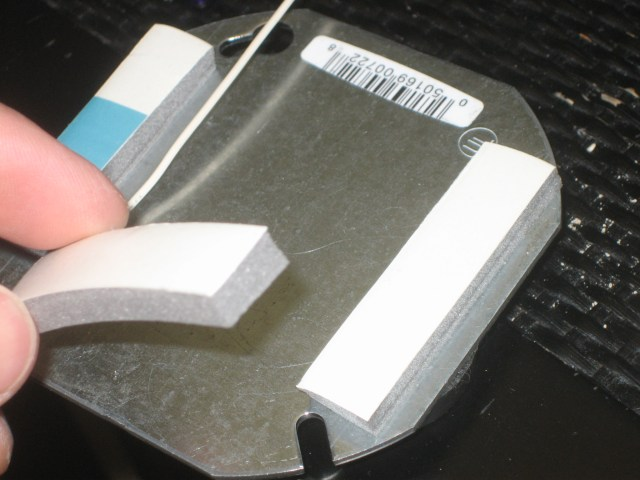
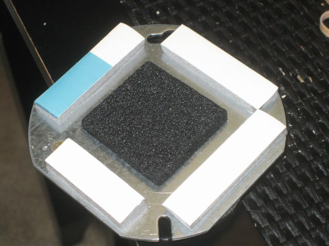
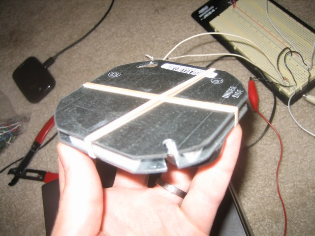
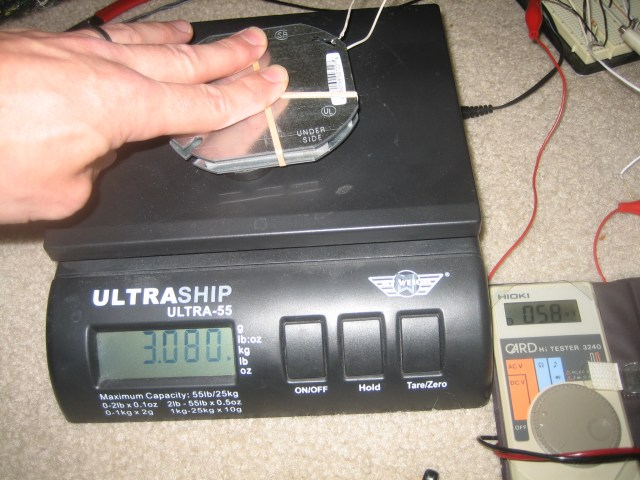
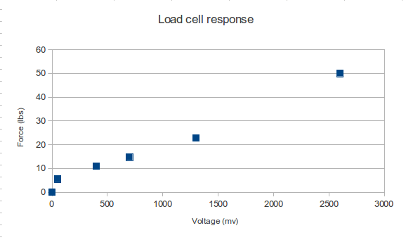
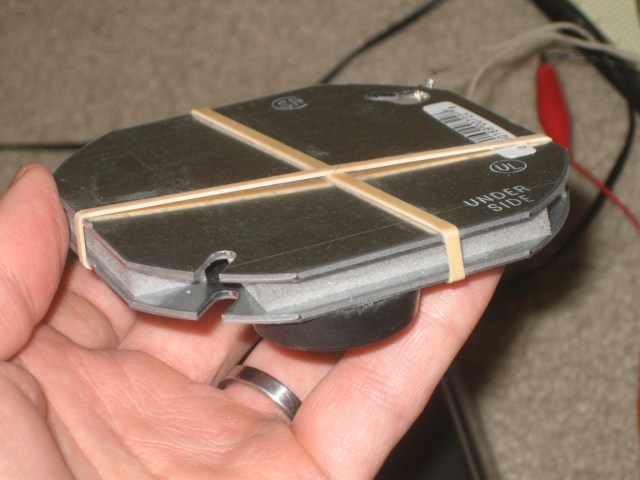
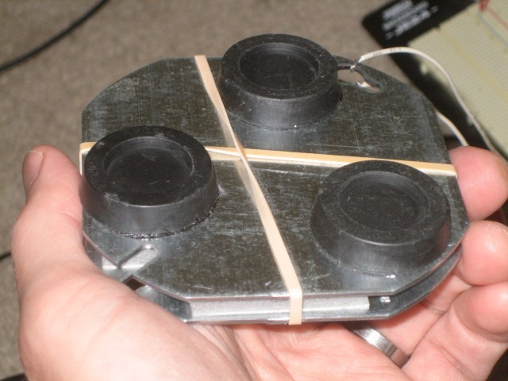

Kick Plate load cell MIDI controller
I’ve been working on a new Midi foot controller concept that uses a pressure-sensitive load cell as the control source. I got the idea for a pressure-sensitive Midi continuous controller from looking at the McMillen stuff and from my Korg NanoPad, which uses resistive pad elements. Sometimes I put the NanoPad on the floor to use with my feet, but it’s just too fragile to use with shoes on.
My requirements were extreme durability, reasonable sensitivity, and low cost. I want to experiment a lot with different foot control setups in my new live PA set, so this should give me a lot to work with. Since you know I love building things out of steel junction boxes, I thought I’d start there for the enclosure. The actual resistive element is going to be a chunk of anti-static foam that ICs come packaged in. I have lots of this stuff lying around, and even if I didn’t I could probably get plenty of it for free by asking around. So this satisfies the cost requirement and the durability requirement right there.
The theory of operation is that the conductive foam will be sandwiched between two steel plates. The plates will be squeezed together by foot pressure and the resistance provided between the two plates via the conductive foam should vary in some inverse proportionality to the displacement of the top plate, and hence the amount of foot pressure.
Now let’s build one and see about how well it performs. What I’m showing here is a prototype, held together with rubber bands, but the final version should be pretty similar, albeit epoxied together instead.
I cut some bits of foam weather stripping material and applied it to the edges of a steel junction box cover. I also put some big rubber feet on the bottom of this bottom plate.

After the weather stripping was applied I put the conductive foam piece in the center. I didn’t glue it so that I could experiment with different foam configurations. I’m planning on tacking the corners using epoxy for the final build.

I put the top plate on and connected wires to the top and bottom plates. For the final build I’ll use adhesive to bond the foam to both plates. For now I’ve used rubber bands to hold the top plate in place.

Now to find out how well it works. My test setup consists of a postal scale and a digital multimeter. I have the load cell connected in a resistive voltage divider network along with a 10K resistor. Loading the cell pulls the output up toward a 5V supply. Here is what the test setup looks like:

I took a few measurements to see what the response curve looked like. The values jump around a bit even with very constant pressures, so these readings are kind of rough averages of what I was seeing on the DMM. The load numbers are pretty accurate, since I was taking those readings from the postal scale. Here is the graph:

So we can see that once we get up to about 5 pounds, the response is remarkably linear. This is pretty awesome actually because we can set up a trigger threshold in software for a trigger mode that I have in mind for this. A relatively light push on the pedal will trigger an event, but a harder push past that can send continuous control messages.
Here are some more views of the prototype:


More to come later when I interface this to an Arduino ADC and get it sending Midi data.